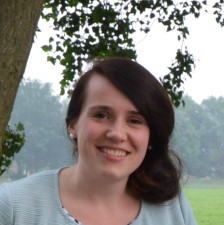
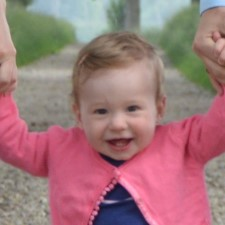

Jeroen van Setten
Jeroen is een positieve man van (toen nog) 29 jaar die zijn omgeving een hoop plezier geeft.
Hij is getrouwd met Corma, en heeft in 2016 één dochter, Mirre.
Ze wonen met z'n 3en samen in's-Gravenpolder, Zeeland.


Corma
Toen sinds 4 jaar getrouwd met Jeroen
Lees de blog van Corma

Mirre
Jeroen en Corma's dochtertje van 1 jaar